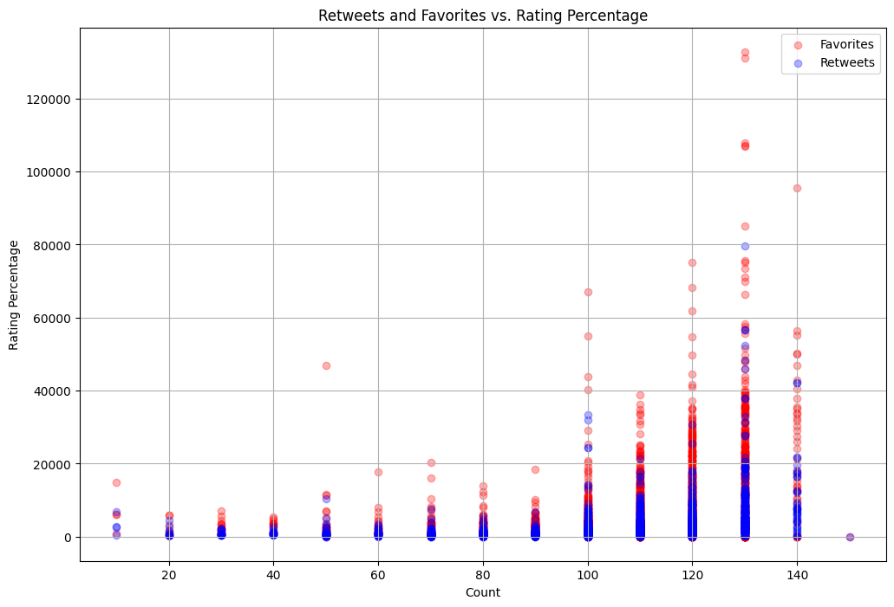
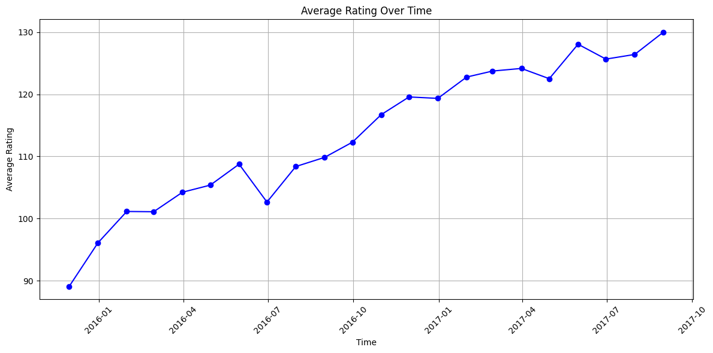
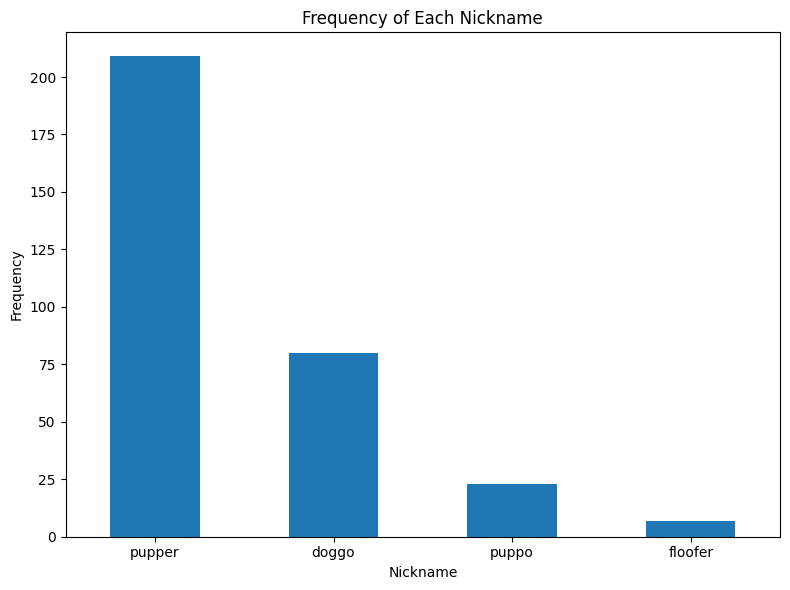

Introduction
This report presents an analysis of the We Rate Dogs tweets dataset. The analysis aims to uncover insights about user engagement, such as how retweets and likes relate to tweet ratings, how ratings change over time, and the popularity of various nicknames used in the tweets.
Questions
- How much do people retweet and like vs. the rating?
- How does time affect the likes?
- What is the most famous nickname?
Analysis
1. Retweets and Likes vs. Rating Percentage
Our scatter plot analysis reveals a notable correlation between the number of favorites (likes) and retweets with the rating percentage of tweets. The visual data suggests that tweets with higher ratings tend to receive more engagement in the form of likes and retweets. This relationship highlights the impact of rating on user interaction, indicating that well-rated tweets are likely to be more popular and shared.

2. Effect of Time on Likes
The line plot examining the average rating over time provides insight into how the popularity of tweets evolves. The data shows trends in how ratings fluctuate, which may reflect seasonal or contextual influences on user engagement. Understanding these trends helps in assessing whether certain periods lead to higher engagement and allows for strategic planning to maximize visibility during peak times.

3. Most Famous Nickname
The bar chart analysis of nicknames used in tweets reveals that 'Pupper' is the most frequently used nickname among the dataset. Despite 'Floofer' being another popular option, it appears less common compared to 'Pupper'. This data provides insights into user preferences and trends in the types of nicknames that resonate more with the Twitter audience.

Summary
Overall, the analysis provides a comprehensive view of user engagement with tweets in the dataset. The correlation between ratings and interactions (likes and retweets) emphasizes the importance of tweet quality. The time-based analysis offers a perspective on engagement trends, and the nickname frequency data highlights user preferences. These insights can guide strategies for improving tweet engagement and understanding audience preferences better.